القائمة
يفتح القائمة من جواله
يمسح رمز الطاولة فتفتح القائمة في المتصفّح — بلا تحميل تطبيق. يتصفّح الأقسام، ويبحث عن صنف، ويرى السعر شاملاً الضريبة.
يطلب الضيف من جواله عبر QR، أو يسجّل الكابتن الطلب. ثم يصل الطلب إلى المطبخ، وتُتابَع جاهزية الأطباق وحساب الطاولة من نظام واحد.
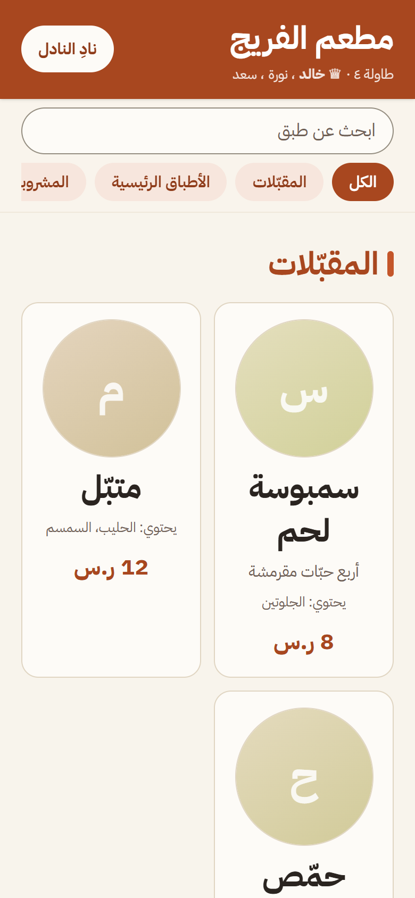
شاشتان من النظام: قائمة الضيف، ولوحة الكابتن.
تُدير أصنافك وأسعارك من مكان واحد داخل سُفرة — بلا منيو ثانٍ تبنيه وتحدّثه بيدك.
أضف الصنف أو غيّر سعره مرّة واحدة، فيتحدّث نظام الضيف والكابتن معًا — وسيظهر التحديث نفسه في منيو خرائط Google عند إطلاقه.
طلبات متفرّقة، وتأخّرٌ بين الطاولة والمطبخ، وحسابٌ لا يعرف من طلب ماذا — مسارٌ واحد يرتّب الأربعة.
يطلب الضيف من جواله، أو يسجّل الكابتن الطلب على الطاولة. والوجهة واحدة.
تذكرة بالأصناف وأحجامها وخياراتها، تظهر على شاشة المطبخ لحظة الإرسال.
يشطب المطبخ الصنف حين يجهز، فيعرف الكابتن ما يقدّمه الآن بلا مناداة.
الطاولة تُغلق بفاتورة تقول من طلب ماذا ومن قبض كم — بلا حساب على ورقة.
طريقتان للطلب، ومسار خدمة واحد.
اضغط «التفاصيل» في أي بطاقة لتقرأ ما تحتها.
الطاولة كلّها على سلّة واحدة، والحساب يعرف من أضاف كل صنف.
التذكرة تصل لحظة الإرسال، والحالة تتحرّك بشطبة واحدة.
نداء يصل إلى الكابتن، وطاولات مرتّبة بحسب ما يحتاج تدخّلاً.
الأحجام والإضافات تُعرَّف مرّة، ويختارها الضيف أو الكابتن بلمسة.
إعدادات تضبطها من لوحة المدير:
لقطات من النظام نفسه — اختر الواجهة، ثم تنقّل بين شاشاتها.
لقطات من بيئة عرض تجريبية — الأسماء والطلبات والمبالغ فيها وهمية.
يمسح رمز الطاولة فتفتح القائمة في المتصفّح — بلا تحميل تطبيق. يتصفّح الأقسام، ويبحث عن صنف، ويرى السعر شاملاً الضريبة.
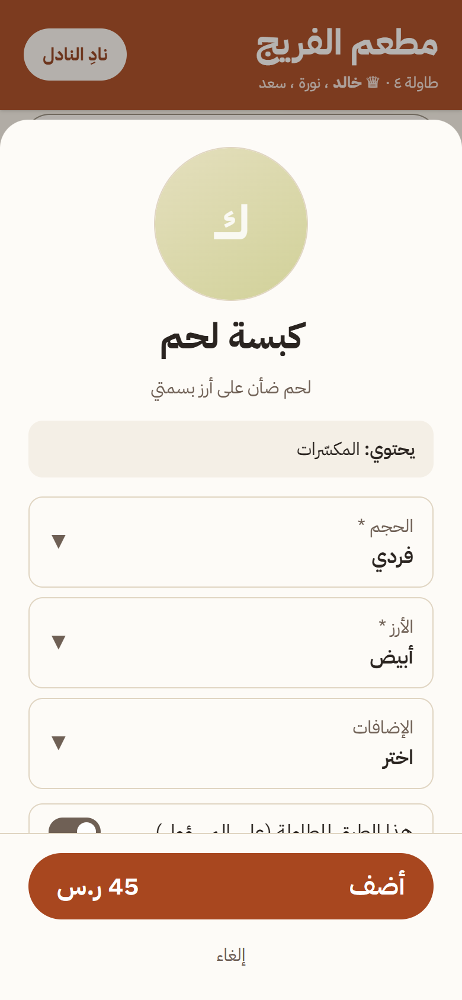
الأحجام بأسعارها، والخيارات التي يعرّفها مطعمك. الاختيار بالضغط لا بالكتابة، فتصل التفاصيل إلى المطبخ كما هي.
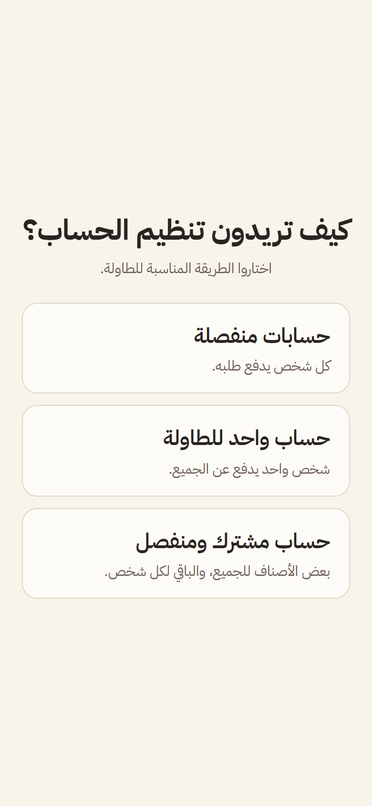
«كيف تريدون تنظيم الحساب؟» يُسأل أوّل من يمسح الرمز فقط، ويُقفل الجواب عند إرسال أول طلب — فلا يتكرّر السؤال عند كل طبق.
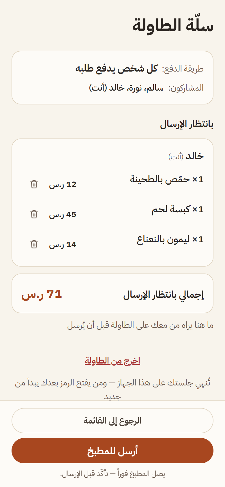
ما يضيفه كل واحد يراه الباقون قبل الإرسال — بلا تكرار ولا صنف منسيّ. وما وصل المطبخ ينتقل إلى قسمه ولا يُعدّ مرّتين.
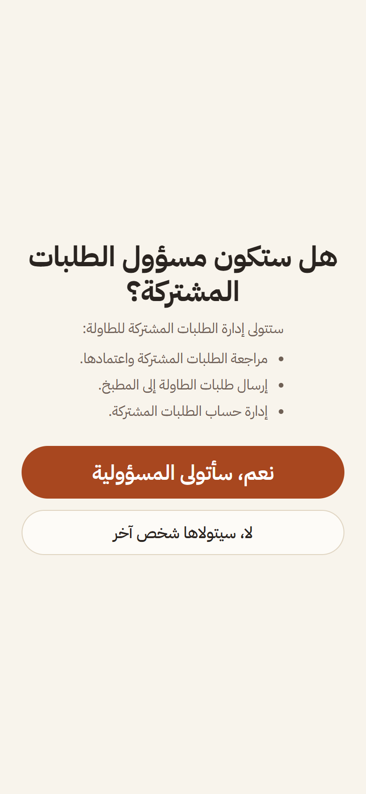
في وضعَي «حساب واحد للطاولة» و«مشترك ومنفصل» تسأل سُفرة من يتولّى الطلبات المشتركة — فيُعرف صاحب المشترك قبل أن يبدأ الطلب.
رأس ثابت يقول كم طاولة مفتوحة وكم لم يُحصَّل، ومرشّحات: الكل، تحتاج تدخّلاً، مفتوحة، متاحة. ومع كل طاولة حالتها ومبلغها، وزرّ «＋ طلب» لتسجيل طلبها.
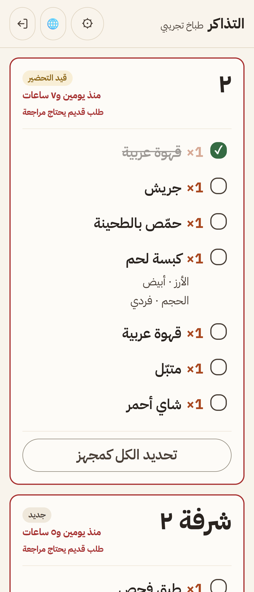
التذاكر بالأقدم أولاً، وعلى كل بطاقة رقم الطاولة وحالتها وزمن انتظارها. والمطبخ يقرأ طاولةً لا أسماء.
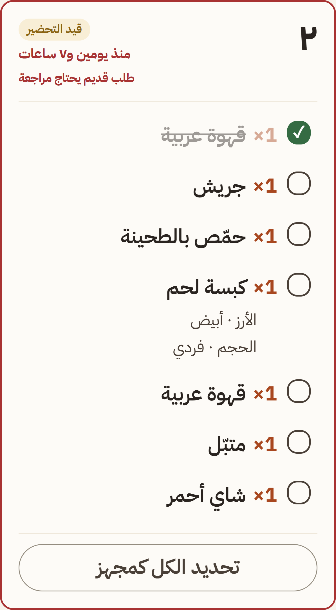
كل صنف بحجمه وخياراته تحته. يُشطب عند تجهيزه فتتحرّك حالة التذكرة — وتُتراجع الشطبة بضغطة ثانية.
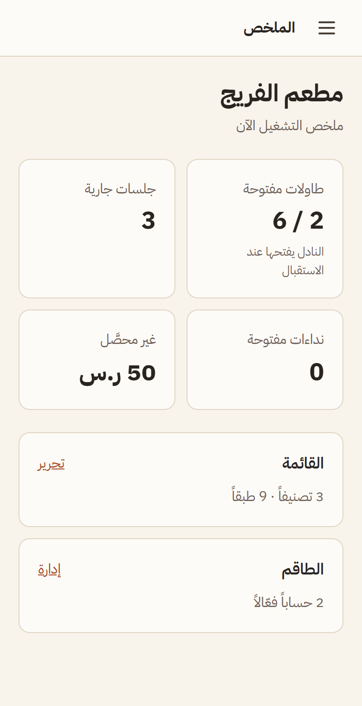
أربعة أرقام: الطاولات المفتوحة، والجلسات الجارية، والنداءات المفتوحة، وما لم يُحصَّل — ومنها تنفذ إلى القائمة والطاقم.
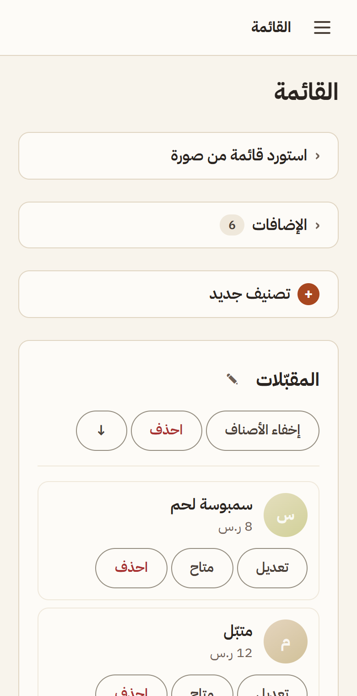
تصنيفات وأصناف وأحجام وإضافات. غيّر سعرًا أو علّق صنفًا نفد — فيظهر التغيير في كل واجهة.
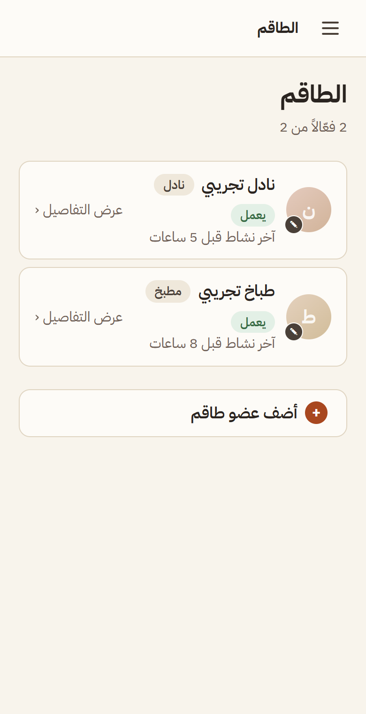
لكل موظّف حساب بدور: نادل أو مطبخ. والصلاحيات تُمنح وتُسحب لكل واحد على حدة.
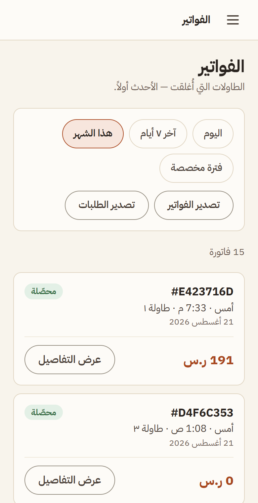
الأحدث أولاً، بمرشّح فترة. والفاتورة تقول من طلب ماذا ومن قبض كم. وتُصدَّر الفواتير والطلبات إلى ملف يفتحه إكسل.
صفحة منيو للعرض فقط، يضع المطعم رابطها في ملفه على خرائط Google. تعرض الأصناف والأسعار من القائمة نفسها، بلا سلّة ولا طلب ولا فتح جلسة طاولة.
هذه الواجهة قيد التطوير ولم تُطلق بعد — فلا لقطة لها.
أطول خطوتين في أي نظام جديد: إدخال المنيو، وتعليم الفريق.
نستخدم الذكاء الاصطناعي لنقل بيانات منيو مطعمك التقليدي إلى المنيو الإلكتروني، بدل إدخال الأصناف والأسعار يدويًا. ترفع صورة منيوك فتُقرأ الأصناف وأسعارها، وتراجعها قبل الحفظ — وما لم يُقرأ بوضوح يبقى فارغًا ولا يُخمَّن.
نوفّر شرحًا مبسطًا بالعربية والإنجليزية والهندية والفلبينية، ويمكن شرح الاستخدام الأساسي لفريقك في نحو ١٥ دقيقة. الواجهات مصمّمة ليتقنها الكابتن والمطبخ من أول يوم.
ابدأ بأسبوعين مجانًا بلا بطاقة. الأسعار أدناه تبدأ بعد انتهاء التجربة.
أسعار الباقة الكاملة للفرع الواحد — وباقة «سُفرة استلام» تشمل فروع الاستلام. تواصل بخصوص الفروع
الأسعار بالريال السعودي. المؤسسة غير مسجّلة في ضريبة القيمة المضافة،
فلا تُضاف ضريبة على السعر المعلن. لا حاجة لبطاقة للبدء —
ودفع اشتراك سُفرة آمن عبر ميسّر ببطاقات مدى وفيزا وماستركارد.
هذا اشتراك مطعمك في سُفرة. أمّا حساب الطاولة فيُحصَّل عند الكابتن في مطعمك كالمعتاد.
بالاشتراك أنت توافق على الشروط والأحكام وسياسة الاسترجاع والإلغاء.
أسبوعان بالنظام كاملًا، بلا بطاقة وبلا التزام. وإن أردت أن تسأل قبل أن تبدأ — تواصل معنا.
تبدأ فورًا · بلا بيانات دفع